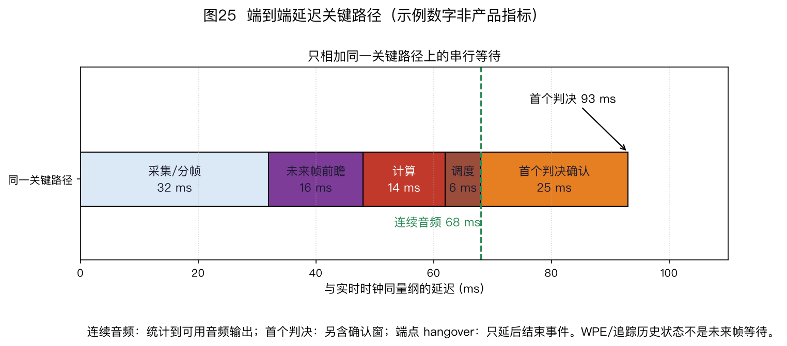

本页目录
⚠️ 本篇是教程第 10 章。前后篇见下方导航。
🏠 首页导读：🏠 导读与导航 ｜ 上一篇：第 9 章 · 声源追踪 ｜ 下一篇：第 11 章 · 总结与选型指南
10. 工程实现、评测与产业实践
本章把前九章的算法放进真实系统，讨论模块启用条件、信号取点、资源预算和验收方法。
本章常用缩写如下：
| 缩写 | 中文名与英文全称 |
|---|---|
| AFE | 音频前端（Audio Front End） |
| AEC | 声学回声消除（Acoustic Echo Cancellation） |
| WPE | 加权预测误差去混响（Weighted Prediction Error） |
| NS / AGC | 噪声抑制（Noise Suppression）/自动增益控制（Automatic Gain Control） |
| VAD | 语音活动检测（Voice Activity Detection） |
| KWS / ASR | 关键词唤醒（Keyword Spotting）/自动语音识别（Automatic Speech Recognition） |
| SRO | 采样率偏移（Sampling Rate Offset） |
| RTF | 实时因子（Real-Time Factor） |
| STFT | 短时傅里叶变换（Short-Time Fourier Transform）：把波形变成逐帧、逐频点的复系数；多通道时逐通道计算 |
| GSS | 导引源分离（Guided Source Separation）：用已知说话人活动引导多通道掩码估计 |
| cACGMM | 复角中心高斯混合模型（Complex Angular Central Gaussian Mixture Model）：GSS 中估计空间掩码的一种模型 |
| SCM | 空间协方差矩阵（Spatial Covariance Matrix）：本章的 GSS 支路用多通道复系数及掩码估计，供解析波束计算权重 |
本章中的 RTF 均指实时因子；波束形成中的“目标相对传递函数”（relative transfer function）不缩写为 RTF，以免混淆。
10.1 参考链路与端到端延迟
音频前端没有适用于所有产品的固定流水顺序。图 23 给出的是一条参考链路，只表达模块间的依赖，不表示每个项目都要启用全部模块。
音频主链是“多通道采集 → AEC → WPE → 解析波束形成 → 单通道 NS/AGC → KWS/ASR”。
定位与追踪读取多通道特征，只向解析波束提供带时间戳的方向状态。说话人分割约束 GSS/cACGMM 掩码；掩码与同一 WPE 阶段输出、未做方向归一化的多通道 STFT 一起形成目标/干扰 SCM，再送入波束形成。
神经或连续语音分离（Continuous Speech Separation，CSS）是 WPE 后绕过解析波束的替代音频路径，不与“GSS 掩码—SCM—波束”合并成一个模块。
若它输出多条语流，后续的单通道 NS/AGC 与识别须按每条输出流分别配置，或先按任务选出一路；不能把多路直接当作一条单声道信号送入后端。若网络本身已完成抑噪或电平处理，还要通过对照决定是否保留相应后处理。

图 23 按较完整的语音交互系统绘制。远端音频先经过混音、均衡和音量控制；AEC 的 render tap 取在这些播放处理之后、DAC/功放之前，扬声器经房间和机壳耦合回麦克风形成声学回路。虚线表示活动控制，实线表示音频、特征或统计量依赖。
确定任务后，可按下面条件省去模块或改变控制路径：
- 设备不播放声音，或不需要边播边听时，可以不启用 AEC。
- 晚期混响已不影响目标指标时，可以不启用 WPE。
- 目标方向固定时，波束形成可以直接使用已知方向，不必持续定位和追踪。
- 只有多人重叠且下游确实需要独立语流时，才需要语音分离。
- VAD、远端活动检测和双讲检测是控制信号。它们不应画成主音频流中的串行处理框。
图中 AEC 的“最先处理”是指：启用 AEC 时，应在会破坏播放参考与回声之间线性关系的 NS、AGC 等处理之前消除回声，并不表示任何系统都必须以 AEC 开头。
确定实际模块后，还要重新核对各信号取点。AEC 通常位于会改变回声路径关系的非线性处理之前。参考信号应覆盖实际播放链中的增益、均衡和混音变化。若参考取在这些处理之前，AEC 看到的参考与扬声器实际播放内容不一致。
WPE、波束和 NS 的先后则要结合实现判断：多通道 WPE 需要多通道输入；单通道 WPE 可以放在波束之后；神经网络若联合完成波束与去混响，也不能再套用传统串行顺序。
10.1.1 延迟不能把每个模块的耗时直接相加
端到端延迟应沿实际关键路径测量，并分成五类：
| 类别 | 含义 | 常见来源 |
|---|---|---|
| 前瞻或算法等待 | 输出当前样本前必须等待的未来输入 | 居中窗、双向网络、判决确认窗 |
| 缓冲 | 驱动、直接存储器访问（Direct Memory Access，DMA）、网络或帧拼接等待 | 声卡周期、抖动缓冲、整帧推理 |
| 计算 | 当前数据到输出完成的执行时间 | 快速傅里叶变换（Fast Fourier Transform，FFT）、矩阵分解、神经网络推理 |
| 调度 | 任务虽已就绪但尚未运行 | 操作系统抢占、队列拥塞、加速器排队 |
| 解码与交互 | 前端之后的关键路径 | 流式 ASR 解码、网络往返、播报准备 |
同一帧内有多个模块串行执行时，它们的计算时间要相加；并行分支取耗时最长的关键分支；流水重叠的等待只沿关键路径计一次。在线 WPE 只使用历史帧时，本身不需要未来帧，但其分帧、平滑和实现缓冲仍可能产生延迟。
可把第 $p$ 条路径写成
$$ \begin{aligned} L_p&=L_{\text{lookahead}}+L_{\text{buffer}}+L_{\text{compute}}+L_{\text{schedule}}+L_{\text{decode}},\\ L_{\text{e2e}}&=\max_p L_p . \end{aligned} \tag{10-1} $$

图 25(a) 把“采集/帧就绪等待”示意为 32 ms，再与未来帧前瞻 16 ms、首个判决确认 25 ms、计算 14 ms 和调度 6 ms 组成一条 93 ms 的示例关键路径。这里的 32 ms 是工作表示例，不等同于 STFT 窗长，也不是所有 32 ms 窗都会增加 32 ms 算法等待；窗的左右对齐、声卡周期、帧移和模块何时开始计算都会改变实际值。
图 25(b) 另行区分三条口径：连续增强音频只计其实际前瞻、缓冲、计算与调度；首个 KWS/ASR 判决还可能等待确认窗；端点 hangover 只延后“语音结束”事件，不应自动计入连续音频或首个判决。
WPE 历史帧、追踪状态、递归协方差和因果 AGC 时间常数是历史状态，不能机械当作未来等待。
这些数字只说明记账方法，没有包含图外可能存在的解码和交互延迟。实际系统应在声学输入与最终输出之间记录时间戳或回采脉冲，分别测量冷启动、稳定运行和最不利调度条件。
把 STFT 窗长从 32 ms 改为 16 ms，也不等于必然省下 16 ms：只有依赖完整窗或未来样本的等待发生变化，关键路径才会缩短。
延迟报告不能只有平均值。稳定运行阶段至少给出中位数（p50）与尾延迟（如 p95、p99）、样本数和测量时长；冷启动另报模型加载、内存分配和状态填充所需时间。若系统存在不同设备、网络或调度模式，应分别报告，而不是把所有样本混成一个分位数。
测量点也要写清，例如“音频驱动时间戳 → 第一块可播放增强 PCM”与“音频入口 → 首个 ASR token”是两条不同关键路径。分位数还需固定计算方法；第 11 章 E11-04 比较最近秩与线性插值，两者在小样本下可能相差较大。
10.1.2 实时回调的期限与数据搬运
声卡回调线程的首要目标是按时交付下一块音频。回调中临时分配大数组、等待互斥锁、访问磁盘、打印日志或执行时间不确定的模型推理，都可能让驱动错过期限。PortAudio 官方回调说明列出了分配、输入输出和互斥等可能产生无界等待的操作。
一种便于检查的分工是：
- 回调复制交织或非交织样本，记录设备时间戳和状态位，写入预分配缓冲；
- 工作线程读取数据，执行 AEC、波束及后端；
- 监控线程汇总期限违约、丢样和高水位，不让日志写入阻塞回调。
回调与工作线程的时钟、缓冲单位和丢帧策略必须写清。这是一种参考结构，不表示所有实时 DSP 都只能在回调外执行；有界、预分配且能满足期限的小型处理也可以在回调中完成。
环形缓冲已满时，系统需要事先选择“丢最旧块”“丢新块”或“降级处理”。任何一种策略都会改变输出：丢块破坏连续状态，等待会阻塞采集，积压则增大延迟。本书的 RingBuffer 采用“丢最旧样本”的可见基线，并累计 dropped；它用来说明容量和溢出语义，不是无锁实时队列。
simulate_deadline_queue 用一条串行工作队列区分三件事：处理完成晚于本帧期限、队列达到高水位、容量已满而丢帧。平均 RTF 小于 1 仍可能出现其中任何一种。正式设备还要记录驱动报告的 underrun/overrun（合称 xrun）、线程优先级、CPU 频率策略和并发负载。
Linux 的 ALSA（Advanced Linux Sound Architecture，先进 Linux 声音架构）还区分具体恢复原因：-EPIPE 表示上溢或下溢，-ESTRPIPE 与挂起有关，-ENODEV 可表示设备移除；某些回声参考设备在关联播放未启动时会返回 -ENODATA。这些状态不能统一解释为“再读一次”。恢复后要记录丢样，并通知依赖连续历史的 AEC、重采样器及后端。ALSA PCM 官方接口说明
参考接口可按下表检查：
| 模块 | 启用条件 | 主要输入 | 主要输出 | 首要检查 |
|---|---|---|---|---|
| 采集与同步 | 多通道输入需要保持时序关系 | 麦克风、时钟 | 对齐的多通道脉冲编码调制（Pulse-Code Modulation，PCM）样本 | 映射、削波、丢帧、相对时延 |
| AEC | 本机播放可能进入麦克风 | 麦克风；播放处理之后、DAC/功放之前的 render tap；远端活动/双讲状态 | 回声减弱的麦克风信号、残余回声与适配状态 | 参考是否覆盖混音/EQ/音量、参考—麦克风整体延迟、削波、双讲稳定性 |
| WPE | 晚期混响影响任务 | 多通道或单通道 STFT | 去混响 STFT | 预测延迟、阶数、语音损伤 |
| 定位/追踪 | 波束或应用需要方向/轨迹 | 多通道特征、活动状态、测量时间 | 坐标系、测量/发布时间、状态与协方差、活动/存在概率、轨迹 ID 与有效期 | 坐标变换、过期外推、漏检/虚警、ID 生命周期；接口细节见 §9.4 |
| GSS 掩码/SCM/解析波束 | 已知活动日志且需要多人空间增强 | 分割活动标注、多通道 STFT、GSS 掩码、目标/干扰 SCM 或方向 | 每目标增强信号、条件数/有效样本诊断 | diarization→掩码→SCM→BF 的依赖不能省略；掩码不是 SCM，方向只控制解析 BF |
| 神经分离/CSS/TSE | 重叠内容需多流，或有可靠目标条件 | 多通道特征；可选注册语音、视觉或方向条件 | 固定/动态输出流、单目标音轨 | 左右上下文、首帧延迟、跨块排列、身份泄漏、域外泛化；它是解析波束的替代路径 |
| NS/AGC | 残余噪声或电平范围影响后端 | 增强信号 | 抑噪、稳电平信号 | 语音损伤、增益抽动、削波 |
| KWS/ASR | 应用需要关键词检测或语音识别 | 音频或特征 | 事件或文本 | 取点、缓存、误报与漏报 |
10.2 拾音、同步与增益
麦克风选型至少要看自噪声、声学过载点、灵敏度、频响和通道一致性。单个器件的典型值不能代替整机测试：声孔、密封、挡板、电源噪声和装配偏差都会改变阵列响应。
脉冲密度调制（Pulse-Density Modulation，PDM）、芯片间音频总线（Inter-IC Sound，I²S）和时分复用（Time-Division Multiplexing，TDM）是常见数字接口，但一根数据线能承载多少通道取决于器件、时钟和控制器配置，不能只按接口名称判断。阵列处理还要确认通道是否共享采样时钟、帧同步是否一致，以及驱动是否会独立丢样。
16 位、24 位和 32 位浮点描述的是数字样本格式。32 位浮点便于保留中间动态范围，不能提高麦克风的声学过载点，也不能消除模拟前端的底噪或削波。某些录音设备以浮点文件保存多增益通路合成后的信号，但这仍不等于“无需增益设计”。
10.2.1 SRO：先区分初始时差和采样率偏移
设参考设备采样率为 $f_s$，另一设备满足 $f_{\mathrm{device}}=f_s(1+\varepsilon)$。经过 $T$ 秒后，两路时间轴的相对漂移一阶近似为
$$ \Delta t(T)=\varepsilon T . \tag{10-2} $$
100 ppm（parts per million，百万分之一）即 $\varepsilon=100\times10^{-6}$。若不校正，1 秒累积 100 μs，10 分钟累积 60 ms。这里的 60 ms 是时间轴长期累积的错位，不能直接当成每一秒都存在的到达时间差（Time Difference of Arrival，TDOA），也不能据此直接换算成固定的波达方向（Direction of Arrival，DOA）偏差。定位退化取决于重对齐周期、分析窗、频带、阵列孔径和估计器。
工程处理分三步：
- 估计相对速率；
- 按估计值重采样；
- 持续跟踪温漂。
互相关峰漂移、相位漂移或专用导频都可用于估计。更新周期和允许残差应由最长连续运行时间、相干性要求及任务指标反推，不宜照搬固定 ppm 门限。
能够共享硬件时钟时，应优先消除 SRO 来源；不能共享时钟时，再评估在线补偿。
初始时差表现为整条“延迟—时间”曲线的截距，稳定 SRO 表现为斜率，偶发丢样则表现为阶跃。三者不能只靠首尾两个点可靠区分。工程上可分块估计互相关峰，先检查峰值置信度，再对可信的“时间—相对延迟”点做直线拟合；残差中若出现近似一个或多个采样间隔的突跳，应先查丢样和时间戳，而不是把所有变化都拟合成 ppm。
estimate_sro_ppm 把相对延迟定义为“参考时间减设备时间”，再拟合截距和斜率；正斜率表示设备采样率较高，与 resample_sro_to_reference 的符号一致。
若横轴使用参考时间，精确斜率为 $\varepsilon/(1+\varepsilon)$；函数按小偏移的一阶近似把斜率乘 $10^6$ 报为 ppm。要求更高时应反解 $\varepsilon=s/(1-s)$，其中 $s$ 是拟合斜率。例如 $s=0.0001$ 的一阶报告是 100 ppm，精确反解约为 100.010 ppm。截距描述初始错位，不进入这个速率换算。
重采样函数用线性插值演示长度和方向；线性插值没有足够的带外抑制，只适合教学检查。设备实现要换成有抗混叠滤波和跨块状态的异步采样率转换器，并测量补偿后的相位残差。
有状态重采样：比率、余量与时间标记
连续流可对照 libsamplerate 的 src_process 或 SpeexDSP 的重采样接口。以 libsamplerate 为例，比例定义为“输出速率/输入速率”；设备快 100 ppm 时，转到参考时钟的比例约为 $1/1.0001=0.99990001$。每次调用还会返回实际消耗的输入帧数和生成的输出帧数，调用方必须保留未消耗输入，不能假设一进一出或每块重新创建转换器。libsamplerate Full API
本书的libsamplerate 两段已知时钟实验实际调用锁定的 C 接口：前 5 s 为 +100 ppm，后 5 s 为 +150 ppm。未校正组在 1～9 s 的标记偏移增加 16 帧，按真值更新比例后该段残余增加 0 帧；每次输入消费量及结束排空也逐调用核对。这里的时钟速率是预先给定的，不能把结果写成“已自动估计漂移”，也没有测抗混叠或真实设备。
为把“估计—补偿—残余核查”连起来，本书另有固定真值的合成时间戳实验。参考时钟为 2 000 Hz，设备时钟快 150 ppm，首样本晚到 2 ms，并故意删去设备索引 12 000 的一个样本。前 2 s 的 9 个时间戳锚点满足 $t_n=0.002+n/2000.3$ s；相对延迟 $n/2000-t_n$ 的截距是 $-2$ ms，斜率应为 $150\times10^{-6}/(1+150\times10^{-6})$，即一阶报告 149.9775 ppm，反解得到 150 ppm。时间戳间隔还单独识别出一个缺样，不能把这个阶跃并入斜率。
校准结束后，示例从参考索引 4 500 开始，以 257 样本块保持插值相位。缺样附近的参考索引 12 002、12 003 被标为无效，而不是跨缺口插值。
按解析生成的参考波形逐段比较，缺样前的 6 000 个有效样本均方误差从未校正的 0.02869 降到 0.000002773；缺样后的 9 000 个有效样本从 0.02131 降到 0.000002477。这些是本书合成数据的无量纲幅值平方误差，未校正组按相同序号直接比较，包含起始错位、长期速率偏差和缺样造成的错位；已校正组只统计有效输出。
结果说明在精确时间戳、恒定时钟和已知缺口下，估计值能驱动跨块补偿，且可分别检查缺口两侧。线性插值没有充分抗混叠能力，本例也没有测设备时间戳噪声、音频盲估计、时钟温漂或在线比例更新；这些仍须在目标设备验证。实验口径与运行方法
换用另一库时要重新检查比例方向。libsoxr 的 soxr_set_io_ratio 使用“输入/输出”比，同一 100 ppm 算例应设为 1.0001，而非 0.99990001。其渐变长度以输出样本数计，滤波延迟也应从输出样本换算到时间；创建状态、切换比率与排空尾部是不同操作。libsoxr 固定可变比率示例
本书另用锁定的 libsoxr 0.1.3 做了已知时钟真值的受控变比率探针：48 kHz 名义输入前 5 s 快 100 ppm、后 5 s 快 150 ppm，输入共 480060 帧；输出 16 kHz，在输出帧 80000 切到新比率，用 160 个输出帧（10 ms）渐变。
持续使用旧比率得到 160004 帧；更新比率并排空后为 160000 帧。每秒脉冲标记的前五个位置相同，9 s 标记在旧比率输出为 144005、在更新后的输出为 144002。两者都有约 2 帧的共同插值器偏移，所以判断漂移要比较相对首个标记的变化，不能把 144002 当作绝对时间误差。
127 输入帧分块与整段渐变输出逐点相同；立即阶跃和 160/320 输出帧渐变的最大逐点差分别约 $6.25\times10^{-4}$、$1.25\times10^{-3}$。这些差值只证明固定实现按不同控制长度产生不同波形，并非设备时钟估计精度。协议、调用消费量及独立验收见工业接口研究 I22。
10.2.2 增益变化与 AEC
AEC 前的时变增益会改变它要辨识的等效回声路径。设计时应记录每一级增益位于参考取点之前还是之后，并确保 AEC 能获知或跟踪这些变化。常见做法是：AEC 收敛和双讲期间保持前置增益稳定；发生削波风险时允许保护性衰减，同时重置或减小自适应步长。锁定时间、解锁条件和允许步进都应通过本机回声路径和双讲集确定，不存在通用的秒数或 dB 阈值。
阵列标定应覆盖相对增益、相位/时延和麦克风坐标。沿用 §2.3 的远场导向约定，令 $\Delta\vec r$ 是某麦相对参考麦的实际位置减标称位置（m），$\vec u$ 是指向声源的单位向量。将实际位置代入导向相位，再减去标称相位，本书得到
$$ \Delta\phi=\frac{2\pi f}{c}\Delta\vec r^{\top}\vec u, \qquad |\Delta\phi|\le\frac{2\pi f}{c}\|\Delta\vec r\| . \tag{10-3} $$
式(10-3)中的相位以 rad 计；真正改变相位的是沿声源方向的位移投影，不是任意方向的位移长度。位移与 $\vec u$ 垂直时，平面波模型中的相位变化为零；近场还需重算传播距离与幅度。
例如 $\|\Delta\vec r\|=0.5\ \text{mm}$、$f=4\ \text{kHz}$、$c=343\ \text{m/s}$ 时，最大绝对相位误差约为 $2.1^\circ$，在位移平行于入射方向时达到。高频和深零陷波束因此更敏感，但 0.5 mm 不是所有产品的统一公差，见 E10-11。
标定不能止于得到一组系数。可执行流程应包含以下步骤：
- 确认通道编号和设备时间戳，在多个已知方向播放宽带信号。
- 估计相对增益、固定时延和随频率变化的相位，同时核对实际麦克风坐标与坐标系。
- 把系数连同设备序列、采样率、温度和标定日期保存。
- 在未参与拟合的方向复测波束图和 DOA。
更换声孔、密封件、麦克风或采集板后，要重新判断旧系数是否仍适用。
10.3 NS、控制信号与唤醒分支
10.3.1 单通道 NS 的方法和边界
单通道 NS 常放在波束输出之后，因为此处计算量较小，也不会反过来破坏传统 AEC 的线性关系。但联合增强网络、多通道掩码估计或为定位专设的增强支路可能采用不同顺序。应依据训练输入和模块假设决定取点。
| 方法 | 基本思想 | 主要风险 |
|---|---|---|
| 谱减 | 从带噪功率谱中减去噪声估计 | 谱下限过低会产生音乐噪声 |
| 维纳滤波 | 按估计信噪比设置频点增益 | 噪声和先验信噪比估计滞后 |
| 子空间法 | 分离语音主子空间与噪声子空间 | 阶数估计和矩阵分解成本 |
| 最小均方误差短时谱幅度估计（Minimum Mean-Square Error Short-Time Spectral Amplitude，MMSE-STSA） | 最小化短时谱幅度的均方误差 | 分布假设与参数估计失配 |
| 最小均方误差对数谱幅度估计（Minimum Mean-Square Error Log-Spectral Amplitude，MMSE-LSA） | 最小化对数谱幅度的均方误差 | 低信噪比下仍可能有语音损伤 |
| 神经网络掩码/映射 | 从数据学习谱或波形映射 | 域外噪声、伪影和内容改变 |
MMSE-STSA 和 MMSE-LSA 不是同一目标：前者估计短时谱幅度，后者在对数谱幅度域定义误差。噪声估计也不必“只在 VAD 判无话时更新”。最小统计量、软语音存在概率和神经网络软掩码都能在语音段缓慢更新；关键是避免把语音持续吸收到噪声模型中。
10.3.2 功率谱减：一个频点怎样算到输出
先固定模型：单通道观测 $y[n]=s[n]+v[n]$，噪声在一小段时间内近似平稳；已经知道开头哪些帧只有噪声。对周期 Hann 窗、512 点短时傅里叶变换（STFT）和 128 点帧移，记频点 $f$、帧 $t$ 的复系数为 $Y_{f,t}$。本书在完整落入噪声段的帧集合 $\mathcal N$ 上，按同一窗和 FFT 归一化口径平均 $|Y|^2$，得到固定的逐频点噪声功率估计 $D_f$。这是已知噪声段的教学条件，不是自动检测无语音帧。
本书演示的功率谱减、相对观测功率的谱地板和复系数重建定义为
$$ \begin{aligned} D_f&=\frac{1}{|\mathcal N|}\sum_{t\in\mathcal N}|Y_{f,t}|^2,\\ \widehat P_{f,t}&=\max\!\left(|Y_{f,t}|^2-\alpha D_f,\;\beta |Y_{f,t}|^2\right),\\ \widehat X_{f,t}&=\begin{cases} \sqrt{\widehat P_{f,t}/|Y_{f,t}|^2}\,Y_{f,t},&|Y_{f,t}|^2>0,\\ 0,&|Y_{f,t}|^2=0. \end{cases} \end{aligned} \tag{10-4} $$
这里 $\alpha\ge0$ 是过减系数，$0\le\beta\le1$ 是相对带噪频点功率的地板比例；$\beta=0.04$ 意味着正功率频点的最小幅度增益为 $\sqrt{0.04}=0.2$。重建保留带噪相位；零系数没有相位，因此保持为零，不能凭谱地板捏造一个任意相位。逐帧逆变换后，按窗平方权重重叠相加。
Boll 的原始谱减论文讨论从无语音段估计噪声；Berouti、Schwartz 与 Makhoul 的功率过减与谱地板论文讨论残余音乐噪声。本书选择 $\beta|Y|^2$ 作为容易复算的地板口径；引用论文的其他地板定义或数值不能直接当作本实现的参数。
锚点手算。 某频点的已知噪声帧系数为 $2$，故 $D=|2|^2=4$。另两帧的带噪系数为 $3$ 和 $1$，取 $\alpha=1$、$\beta=0.04$。
前一帧功率是 $9$，相减得 $9-4=5$，地板为 $0.04\times9=0.36$，故输出功率 $5$、幅度 $\sqrt5\approx2.2361$；后一帧功率是 $1$，相减得 $-3$，地板为 $0.04$，故输出功率 $0.04$、幅度 $0.2$。
两帧原相位均为零；若原系数改成 $3\mathrm j$ 和 $1\mathrm j$，输出相应为 $\sqrt5\mathrm j$ 和 $0.2\mathrm j$。不能把功率相减误写成幅度 $3-2=1$。这个手算只证明式(10-4)的数值约定；若噪声统计随时间改变或噪声段混入目标，$D$ 就会失配。
运行谱减练习代码可复算同一频点的两个带噪帧；另运行统一音频生成器可重建五个试听文件及参数清单：合成谐波目标、独立高斯噪声、带噪输入、$\beta=0.04$ 输出和 $\beta=0$ 输出。16 kHz、2 s 输入的前 0.4 s 仅有噪声，47 个完整落在该段的 STFT 帧估计 $D_f$；两种处理使用同一输入、同一固定噪声估计和同组共同导出增益。
先降低播放音量，再比较带噪输入、有地板输出与零地板输出。离散随机残余频点可能听成短促的调性噪声，但这组数学合成信号没有经过人耳听测，不能据此报告语音可懂度、MOS 或产品降噪性能。
在生成器的浮点波形上计算前 6400 个样本的均方根值，得到下表；三者的共同 WAV 导出增益为 1，表内按四位小数舍入。输入只有噪声，所以这里没有“语音保真”可比。$\beta=0$ 的前奏数值比 $\beta=0.04$ 更低，只说明这个固定输入的平均剩余幅度较低，不能推出音乐噪声更少。
| 前奏版本 | 均方根幅度（数字满幅为 1） |
|---|---|
| 带噪输入 | 0.0697 |
| $\beta=0.04$ 输出 | 0.0404 |
| $\beta=0$ 输出 | 0.0381 |
谱减的关键边界是估计误差：噪声上升时旧 $D_f$ 偏低，会留下残余；目标误入估计段时 $D_f$ 偏高，会损伤目标。较大的 $\alpha$ 或较小的 $\beta$ 可能减少持续噪声却造成时频斑点；地板也会保留噪声，不能称为无失真解。此实现没有自适应噪声追踪、语音存在概率或 Ephraim–Malah 的 MMSE-STSA/LSA 统计估计器。它是可复算的谱减基线，不能用其输出冒充这些方法。
10.3.3 控制状态不能只看一个 VAD 比特
控制状态需要涵盖近端语音、远端播放和双讲。下表列出这些状态下的更新条件；具体实现可以使用离散状态，也可以使用连续的活动概率。
| 状态 | AEC 自适应 | NS 噪声估计 | 波束/空间统计 | WPE 更新 | ASR/KWS |
|---|---|---|---|---|---|
| 仅远端播放 | 参考有效且无削波时可更新 | 残余回声未污染噪声估计时可更新 | 避免把回声当目标 | 视残余回声而定 | 需要播放时唤醒时，KWS 可监听 AEC 后信号 |
| 仅近端语音 | 保持；没有有效远端参考可供辨识 | 软更新或保持 | 更新目标统计，谨慎更新噪声统计 | 可按功率加权更新 | 送入后端 |
| 双讲 | 由双讲检测降低步长或采用鲁棒更新 | 软更新或保持 | 分离目标与干扰统计 | 不应仅因“有语音”而冻结 | 保留近端语音 |
| 无近端、无远端 | 保持 | 更新背景模型 | 更新噪声统计 | 按实现选择保持或更新 | 后端可休眠，KWS 是否常开由应用需求决定 |
WPE 正是利用语音及其晚期混响的统计关系估计预测滤波器，不能用“VAD 有话就冻结”作为通用规则。AEC 的控制则必须结合远端活动和双讲检测；仅用近端 VAD 无法判断滤波器是否有可学习的回声参考。
VAD 的迟滞、挂起和预卷缓存应由语料中的短词、停顿和噪声脉冲调节。
KWS 是否绕过 VAD、是否持续运行、从 AEC 后还是增强后取信号，取决于功耗和训练域。设置 KWS 阈值时，还要在指定误唤醒率下报告漏唤醒率，不能只给一个孤立分数。
10.3.4 VAD 与 AGC 的最小可运行基线
能量 VAD 虽然简单，却能把控制逻辑讲清。启动阈值应高于继续阈值，避免能量在单一阈值附近来回切换；hangover 在能量下降后继续保持若干帧，减少词尾被截断。预卷缓存解决的是词首：VAD 刚触发时，把触发前保留的短时音频一并送给后端。三个时间量都要换算成帧数，并在短词、长停顿和脉冲噪声上分别验证。
HysteresisVAD 输入线性均方能量，不接受 dB 阈值；把 dBFS 门限传给它会造成口径错误。hangover_frames=2 表示首次跌破继续阈值的两帧仍保持活动，第三帧才关闭。该基线没有噪声自适应、频带特征和神经网络，也不自行保存预卷；预卷可用 RingBuffer 保留触发前的固定帧数，并在 VAD 由假变真时先取出缓存。
AGC 要区分“把正常语音逐渐推向目标电平”和“立刻避免削波”。增益上升可以缓慢释放，增益下降需要更快；即使平滑状态来不及下降，当前块也要受安全上限约束。PeakProtectAGC 给出这种峰值保护基线。
它不估计响度，也不能修复模拟前端已经发生的削波。验收时要同时画输入电平、增益、输出峰值和削波比例，并在 AEC 双讲期间检查增益变化是否破坏回声路径模型。
需要比较输出响度时，可以另用 libebur128 测量响度与真峰值。响度按频率加权和时间统计得到，不等于当前块的最大样本；真峰值估计重建波形的幅度，也可能高于采样峰值。测量模式、通道角色、门控和无有效能量的处理须固定，数字域响度与峰值都不能未经播放校准就换成声压级。libebur128 固定 API
一个容易手算的反例是 48 kHz 采样的 12 kHz 正弦，幅度 0.95、初相 $\pi/4$。平台段每个离散样本的绝对值都是 $0.95/\sqrt2\approx0.67175$，而连续正弦可在两个采样点之间达到 0.95。
对 10 s 信号的两端各加 100 ms 平滑渐变后，锁定 libebur128 的 4 倍插值器实际返回采样峰 0.671751、估计真峰 0.946371；后者是该库有限长滤波器的估计值，不是把解析上界精确重建成 0.95。若让正弦从第一点突起，滤波起始瞬态可能抬高库估计，不适合用来检验纯正弦的采样间峰值。输入与独立手算见工业接口研究 I23。
实际 VAD 接口有不同的输入协议。WebRTC 传统 VAD 使用合法采样率下的 16 位单声道 PCM 和 10、20、30 ms 帧；Silero 核实的 ONNX 包装器使用 16 kHz/512 点或 8 kHz/256 点，均为 32 ms，并保留跨块状态。WebRTC VAD 接口、Silero 包装器源码
因此，10 ms 的声卡回调不能直接当成任意模型的一次输入。接入前要按所选接口缓冲到合法块长，并记录判决对应的采集时间；否则 32 ms 块的输出可能被错误标成最后一次 10 ms 回调的即时结果。
跨块状态要与会话绑定。每块重置会改变模型行为，多条独立会话共享状态会相互干扰。阈值、最短语音、静音等待和前后填充也要分开调节；降低语音概率阈值并不能自动补回已经丢失的词首音频。工业 VAD、WebRTC AGC2 和 DeepFilterNet 的源码阅读顺序及故障试验见工业实现研究中的控制与增强部分。
10.4 定点化、算力与功耗预算
10.4.1 从浮点实现到目标芯片
定点化要检查四件事：
- 数值范围；
- 累加位宽；
- 非线性函数近似；
- 模块间缩放。
协方差矩阵求解与 WPE 线性方程组尤其要观察条件数；对角加载能改善数值稳定性，但加载量应相对矩阵尺度定义。32 位或更宽的累加器可以减少乘加溢出，不能保证病态矩阵求解正确。
训练后量化（Post-Training Quantization，PTQ）不一定需要同一种校准流程。以 ONNX Runtime 的激活量化为例，静态量化用代表性校准输入预先确定尺度与零点；动态量化在推理时根据当前激活计算这些参数，因此增加了运行时工作。量化感知训练（Quantization-Aware Training，QAT）则在训练阶段模拟量化误差。官方量化文档的 Dynamic/Static Quantization 与 Method selection 小节，核实于 2026-09-22。
选择哪一种方法，应依据目标芯片支持的算子、代表性数据上的任务指标和最不利输入测试。权重与激活是否同时量化、逐张量还是逐通道定标也要写清，不能仅用“int8”推断统一的校准方法、精度下降量或加速倍数。
定点格式还要明确舍入和饱和规则。本书的 q15_quantize 把 $[-1,1)$ 映射到有符号 Q1.15：乘 $32768$、按最近偶数舍入，再饱和到 $[-32768,32767]$。因此 $-1$ 可以精确表示，$+1$ 只能饱和为 $32767/32768$。
q15_dot 用 64 位整数累加乘积，只在输出时除以 $2^{15}$、按最近偶数舍入并饱和；目标 DSP 若使用不同累加位宽或逐乘积舍入，就不应期待 bit-exact 相同。测试既要覆盖正常小数，也要覆盖 $\pm1$、超范围输入和累加器极值；不能只比较平均误差。实数 PCM 接口还应在类型转换前拒绝意外的复数输入，不能把丢弃虚部后的数组当作原始信号。
SIMD（单指令多数据）优化从数据布局开始。连续的频点、通道或抽头便于向量加载，跨步访问和频繁转置会抵消乘加加速。报告 SIMD 收益时要写明标量基线、指令集、编译选项、数组对齐、块尺寸、线程数和是否包含格式转换。运行时派发还要保留标量回退，并让两条路径通过同一组数值容差或 bit-exact 测试；“编译器打开了向量化”不能代替这些检查。
CMSIS-DSP 的 arm_fir_q15 是具体对照：源码说明了 1.15 乘法、64 位累加和输出截位/饱和，而本书 q15_dot 采用最近偶数舍入。两者都称 Q15，却不应默认逐位相同；快速版、标量版和向量版也要绑定内核及编译宏分别检查。先用脉冲、满幅和余数块长验证，再报告目标芯片周期数。CMSIS-DSP FIR 源码
10.4.2 不混用指令数、乘加次数和实时因子
- 每秒乘加次数（Multiply-Accumulate Operations per Second，MAC/s）或每秒百万次乘加（Million MAC/s，MMAC/s）适合描述已经明确算子图和计数规则的算法计算量。
- 每秒百万条指令（Millions of Instructions per Second，MIPS）依赖指令集、并行宽度、存储访问和编译器。同一算法在不同处理器上的 MIPS 不可直接比较。
- RTF 定义为处理时长除以音频时长。RTF 小于 1 只说明平均速度足够；还要检查单帧最坏耗时、调度抖动和队列增长。
“帧耗时/帧长”得到的是 RTF，不是等效 MIPS。预算表应记录测量平台和版本：
| 模块 | 配置与输入尺寸 | MAC/s 或分析复杂度 | 最坏帧耗时 | RTF | 峰值内存 | 平均/峰值功率 |
|---|---|---|---|---|---|---|
| 示例模块 | 麦数、采样率、帧长、模型版本 | 在同一计数规则下统计 | 在目标芯片实测 | 同一段音频实测 | 高水位实测 | 功率仪实测 |
电池容量应换算为能量。若标称电压为 $V$、容量为 $C_{\mathrm{Ah}}$，标称能量近似为 $E=VC_{\mathrm{Ah}}\ \mathrm{Wh}$，其中 Wh（watt-hour）表示瓦时。续航估算为
$$ t\approx\frac{E\,\eta}{P_{\text{avg}}}, \tag{10-5} $$
式(10-5)约定 $P_{\text{avg}}$ 是各工作状态按占空比加权后、在稳压与转换电路输出端测得的整机负载平均功率；$\eta$ 才可同时计入电池可用容量比例、从电池到负载的转换效率及老化裕量。若功率仪测的是电池端输入功率，转换损耗已经包含在 $P_{\text{avg}}$ 中，$\eta$ 不应再次计入转换效率。应记录电压、测点、各状态功率与占空比；只给毫安时（mAh）而不给这些条件，无法推出可验收的续航。
10.4.3 把吞吐、排队、内存和功率放进同一预算
单看一列可能漏掉真正的失败条件。下面是本书构造的六帧教学调度，不是目标芯片实测：四路 16 kHz 浮点音频每 10 ms 到来一帧，一条串行处理线程的六次服务耗时依次为 $[4,4,25,4,4,4]$ ms。队列最多容纳三个未完成帧，包含正在计算的一帧；处理不能抢占，每帧应在下一帧到达前完成。下表的到达、开始和完成时间均从第一帧到达的 $t=0$ 起算。
| 帧号 | 到达 ms | 开始 ms | 完成 ms | 响应 ms | 是否超过 10 ms 期限 |
|---|---|---|---|---|---|
| 0 | 0 | 0 | 4 | 4 | 否 |
| 1 | 10 | 10 | 14 | 4 | 否 |
| 2 | 20 | 20 | 45 | 25 | 是 |
| 3 | 30 | 45 | 49 | 19 | 是 |
| 4 | 40 | 49 | 53 | 13 | 是 |
| 5 | 50 | 53 | 57 | 7 | 否 |
计算量之和为 $45$ ms，观测的六帧音频长 $60$ ms，因而示意平均 RTF 为 $45/60=0.75$。帧 2 的 25 ms 服务使帧 3、4 等待；$t=40$ ms 时在途帧最多为 3，最大等待为 15 ms，六帧虽全被接收，却有 3 帧错过期限。
六个响应样本中的最大值为 25 ms；不能把这么短的构造序列说成已测得稳定 p99。增加队列容量只能减少溢出，不能让已逾期的帧重新准时。
若常驻状态分别占 400、200、60 KiB，且每个在途帧使用四通道 $\times160$ 样本 $\times4$ B $=2560$ B $=2.5$ KiB，三个在途帧共 7.5 KiB。这里明确假设三块状态同时驻留且帧内存彼此独立，峰值为 $400+200+60+7.5=667.5$ KiB，低于示意 700 KiB 上限；真实程序还要计入线程栈、对齐、库工作区及共享缓冲区的实际生命周期。
只有假设这六帧模式长期重复且线程服务时间等于高功耗时间，才可用 $45/60=75\%$ 作功率占空比。若负载端活动/空闲功率为 1.2/0.2 W，则平均为 $1.2\times0.75+0.2\times0.25=0.95$ W；3.7 V、2 Ah、可交付比例 0.8 给出 $5.92/0.95\approx6.23$ h。功率假设与帧截止期假设彼此独立，续航估算合格也不能抵消三次逾期。完整输入和逐帧结果见 E10-14，复算入口为 exercises_engineering.py。
10.5 评测体系
每项指标只能回答一部分问题。面向完整系统的评测通常还需覆盖任务效果、语音质量、稳定性、资源占用和长时间运行。
| 对象 | 可用指标 | 不能单独说明什么 |
|---|---|---|
| AEC | 回声返回损失增强（Echo Return Loss Enhancement，ERLE）、双讲恢复、残余回声主观分 | ERLE 高不等于近端语音无损 |
| 定位 | 角误差、漏检率、虚警率、均方根误差（Root Mean Square Error，RMSE） | 单源 RMSE 不代表多人追踪稳定 |
| 波束/分离 | 尺度不变信号失真比（Scale-Invariant Signal-to-Distortion Ratio，SI-SDR）、串扰；多输出转写用 cpWER、ORC-WER 或 sa-WER | 单个客观分不代表听感或内容正确；多输出指标的排列/身份口径见第 11 章“多人重叠”决策表 |
| 说话人分割 | 分割错误率（Diarization Error Rate，DER）、Jaccard 错误率（Jaccard Error Rate，JER） | 必须固定 collar、重叠计分、参考区域和评分工具版本；分割正确不等于分离内容正确 |
| 增强 | 短时客观可懂度（Short-Time Objective Intelligibility，STOI）、旧研究复现中的感知语音质量评估（Perceptual Evaluation of Speech Quality，PESQ）、感知客观听音质量分析（Perceptual Objective Listening Quality Analysis，POLQA）、主观听测 | 客观模型可能在新失真上失准 |
| 追踪 | 最优子模式分配距离（Optimal Sub-Pattern Assignment，OSPA）、轨迹完整度、轨迹中断/碎片数、轨迹身份切换（ID switch） | 位置准确不等于身份连续；OSPA 的 $p,c$ 和角度距离见 §9.4 |
| 系统 | 端到端延迟、RTF、功耗、崩溃/丢帧 | 平均值不代表尾延迟和最坏状态 |
OSPA 把定位误差与目标数量错误合成一个集合距离；经典 OSPA 本身不保留身份标签，因此不能用它代替轨迹身份切换指标。报告还应给出轨迹中断/碎片数、ID 切换和关联规则，而不是用一个集合距离覆盖全部时序失败。
ITU-T 已于 2024 年 1 月 5 日撤销 P.862（PESQ），并在官方页面指向 P.863（POLQA）。因此，PESQ 适合在必须对照旧论文时按原条件复现；新的标准合规性表述不应把 P.862 写成现行建议书。P.863 是现行的客观语音质量建议书，但其适用范围和版本仍需随正式报告记录。
ITU-T P.835（07/2026）用于对含噪语音处理系统做主观听测，分别评价语音信号（Signal，SIG）、背景噪声（Background，BAK）和总体效果（Overall，OVRL）。截至 2026-09-22，官方条目状态为“生效，预发布”（in force, prepublished）；三维评分的用途可见官方工作项目说明。
它适合区分“噪声是否减弱”和“语音是否受损”，但不能直接评价 DOA、轨迹身份或空间位置。正式报告应写明标准版本、听测材料、听众筛选、播放设备和统计区间。
ITU-T P.566（07/2026）的官方条目将其列为“已生效，待发布”（in force / to be published）的单端机器学习多维语音质量模型。在正式文本发布前，本书不从二手资料扩写输出维度或评分细则。P.566 的单端客观预测不能代替 P.835 主观听测，也不评价 DOA、轨迹或空间位置。
公开评分代码可帮助固定执行口径。DNS Challenge 的 DNSMOS/dnsmos_local.py 提供本地质量预测，AEC Challenge 的 AECMOS/AECMOS_local/ 提供回声相关评分；前者还区分普通和个性化模式。需要同时锁定模型摘要、采样率、裁段、短文件处理与聚合方式。模型预测分不是实际听众 MOS，也不能代替任务识别指标。DNSMOS 本地说明、AECMOS 本地说明
AECMOS 官方为 2021/2022 测试集规定了收敛段后的评分范围，近端单讲、远端单讲和双讲的裁取方式不同。使用别的测试集时，应按该测试集规则定义区间，不能直接沿用旧届剪裁。逐文件失败、静音输出和缺失场景也要计入报告，避免只汇总成功评分的子集。
全参考指标还要求干净参考与处理后信号的采样率、时间轴和评分区域一致。pystoi 提供普通 STOI 与扩展 STOI（Extended Short-Time Objective Intelligibility，ESTOI），两种模式应分别报告。锁定实现对去静音后不足 30 个 STFT 帧的输入发出警告并返回 1e-5；这是无效评分的返回值，不能当成有效低分加入平均。pystoi 固定实现，第 64～70 行
ViSQOL（Virtual Speech Quality Objective Listener）则比较参考与退化信号的时频结构，输出客观听音质量预测分（Mean Opinion Score—Listening Quality Objective，MOS-LQO）。该实现区分 48 kHz 的 audio 模式与 16 kHz 的 speech 模式，并将多通道下混单声道；因此不能用它证明阵列方向或双耳线索保持。它不是 POLQA 实现，模型预测也不能代替受试者评分；模式、映射模型和适用失真范围都要记录。ViSQOL 固定说明的 Guidelines 与 FAQ
本书的音频示例用于辨认时延、拖尾、削波和增益等现象，不是标准主观评分材料。试听前先降低播放音量，确认没有异常峰值，再比较同一输入的参考、受扰和处理后版本。对同组文件施加共同线性增益，可以保留它们的相对电平；各文件分别峰值归一化会抹去衰减或增益差异。若为了比较音色而另做响度匹配，应把该版本和原始测量版本分开保存，并记录匹配方法。
数值评分应使用规定的原始数据、对齐和增益规则，不能直接把试听归一化后的文件当作评分输入。合成谐波或噪声只检验信号处理现象，不包含自然语言内容，不能由此报告语音 MOS、可懂度或 WER。材料来源、参数及章节练习见练习与音频实验手册。
10.6 数据、仿真与复现
公开数据集适合建立可复现基线，不能代替目标设备录音。选择数据时要核对采样率、麦克风几何、房间、说话人数、重叠率、参考真值和许可证。训练、调参、最终测试应按房间或说话人隔离，避免相邻片段泄漏。
录音和声纹还要有数据治理清单：
- 记录采集目的与用户同意范围；
- 区分原始音频、转写文本、声纹嵌入和调试日志；
- 说明数据在端侧还是云侧处理，传输与静态存储怎样加密，哪些角色可以访问；
- 规定保留期限、删除与撤回流程；
- 导出故障样本前做身份信息检查；
- 第三方数据集按许可证限制保存和再分发。
目标说话人提取使用的注册声纹可能比普通缓存更敏感，不能因为只保存嵌入而默认无法关联个人。
具体法律和认证要求取决于部署地区与产品用途，应由相应合规审查确认。
房间冲激响应仿真也要写全条件。以下代码按 pyroomacoustics 0.10.0 编写，说明 max_order 与混响时间的关系；安装命令见项目 README：
import pyroomacoustics as pra
room_dim = [6.0, 5.0, 3.0]
target_rt60 = 0.45
absorption, max_order = pra.inverse_sabine(target_rt60, room_dim)
room = pra.ShoeBox(
room_dim,
fs=16000,
materials=pra.Material(absorption),
max_order=max_order,
)
inverse_sabine 根据目标混响时间 $T_{60}$ 和房间尺寸给出吸收参数及建议的镜像源截断阶数；$T_{60}$ 表示声能衰减 60 dB 所需的时间。
这里的 target_rt60=0.45 是设计目标，不是已经测得的仿真结果。生成房间冲激响应（Room Impulse Response，RIR）后，还应由 RIR 的 Schroeder 能量衰减曲线估计实际 $T_{60}$，并报告拟合区间。衰减动态范围不足时，不应把短区间外推值写成直接测得的 60 dB 衰减时间。
max_order 控制镜像反射的截断深度，不能单独决定 $T_{60}$。可逐步增加 max_order，直到测得 $T_{60}$、RIR 总能量和目标任务结果在预定容差内不再明显变化。若始终不收敛，应调整房间或仿真方法，而不是只抬高阶数。
论文或报告还应记录：
- 目标与实测 $T_{60}$；
- 声源和麦克风坐标；
- 材料模型、随机种子与噪声生成方法；
- pyroomacoustics 版本和拟合方法。
10.7 分布式阵列
分布式系统要分别解决三类问题：
- 时间轴：初始时差、SRO、丢包和网络抖动要分开估计。长录音首尾对齐只能发现累计误差，不能代替运行时监测。
- 坐标与增益：节点位置、朝向、通道增益和频响决定导向矢量能否共用。节点移动后要更新几何。
- 融合：集中式波束需要传多通道信号或统计量，对同步和带宽要求高；通道选择和识别结果融合要求较低，但损失空间信息。应把弱节点加入后的退化列为测试项。
验收阈值应由网络带宽、最长会话和目标任务确定。例如，要求一小时内相位相干的系统与只做句级识别的系统，对残余 SRO 的要求不会相同。
10.8 阵列形态与场景约束
公开产品的麦克风数量、位置和算法会随硬件版本及地区型号变化。若没有可追溯的一手资料，不应从拆解照片推断算法链。本教程因此只讨论可迁移的设计条件：
| 场景 | 先确认的约束 | 可能启用的模块 | 必测状态 |
|---|---|---|---|
| 带扬声器的音箱/会议终端 | 播放声压、参考取点、覆盖角 | AEC；按混响决定 WPE；按覆盖决定定位/波束 | 远端单讲、近端单讲、双讲、音乐播放 |
| 会议室 | 房间混响、座位分布、重叠说话比例 | 多波束或分离；晚期混响明显时用 WPE | 单人、抢话、键盘/空调、不同座位 |
| 车载 | 舱位、车速相关噪声、多个时钟域 | 分区波束、SRO 补偿、参考完整的 AEC | 怠速、行驶、开窗、空调、音乐与通话并发 |
| 耳机/助听设备 | 上下行路径、佩戴泄漏、低延迟和电池约束 | 固定/自适应双麦波束、NS、反馈抑制 | 不同佩戴、风噪、自己说话、最坏增益 |
| 机器人 | 运动自噪声、阵列姿态、惯性测量单元（Inertial Measurement Unit，IMU）时间戳 | 运动前馈、姿态补偿、定位/追踪 | 静止、转头、行驶、风扇/电机变速 |
| 手机/手持设备 | 握持、遮挡、横竖屏、通话模式 | 通道选择、波束/NS、模式切换 | 手指挡孔、风噪、贴脸、免提、录像 |
球阵的可用球谐阶数同时受空间采样、阵列半径、频率和模态噪声放大限制。这里 $k=2\pi f/c$ 是波数，$r$ 是球阵半径，$kr$ 是无量纲频率。
表示到 $N$ 阶的完整球谐系数共有 $(N+1)^2$ 个，因此离散阵元数至少要能支撑相应的空间采样；实际还要留出几何和数值稳定性余量。
可用阶数在高频受阵元空间混叠限制，在低频又受 $kr$ 较小和径向滤波噪声放大限制。不能用 $N=\lceil kr\rceil+1$ 一条式子替代完整设计，也不能把“某阶需要多少系数”直接等同于任意摆放的同数麦克风一定可用。
三个非共点麦克风已经构成阵列。若几何非共线，它们能提供二维空间信息；若接近共线，则某些方向存在镜像或条件数问题。手机的主要限制通常是孔径小、结构遮挡和工作模式变化，而不是“三麦构不成阵列”。
10.9 从模型到设备
部署前先固定输入尺寸、算子版本、量化方式和线程配置，再测算力与内存。模型参数从 32 位浮点量化到 8 位整数时，参数存储在理想情况下约缩小四倍；端到端速度取决于硬件是否有相应整数内核、访存和算子融合，不能据此承诺“快四倍”。
低功耗常驻任务和高算力按需任务可以分开：例如 KWS 在低功耗处理器上运行，唤醒后再启动 ASR 或分离网络。但 AEC、波束、WPE 是否常驻取决于是否需要持续边播边听、录音或通话，不应把“唤醒前关闭完整前端”写成固定方案。
端侧、云侧或混合部署要比较隐私、断网可用性、网络尾延迟、更新能力和能耗。对品牌产品的实现方式没有公开证据时，只能写成候选架构，不能当作产品事实。
10.9.1 开源实现怎样用作工程对照
开源项目解决的是链路中的不同部分，不能因为都能处理音频就横向替换。下面只列本书正文能够说明用途和边界的项目；固定来源、提交、许可证和核实日期统一记录在 codes/SOURCES.lock.json，代码、模型权重和数据集许可证分别检查。
| 官方项目 | 可以对照什么 | 不能由它证明什么 |
|---|---|---|
| WebRTC AEC3 固定提交 | 实时 AEC 的延迟估计、线性消除和残余回声抑制分工，详见 §6.8 | 不能把内部常数当成本产品阈值，也不覆盖阵列定位和 WPE |
| PortAudio 19.7.0 固定提交 | 跨平台设备枚举、阻塞与回调式音频输入输出；该提交按官方 Release Notes 定位 | 不负责跨设备同步、重采样、AEC 或波束形成 |
| pyroomacoustics 0.10.0 发布记录 | 房间、RIR、DOA 与波束的 Python 原型 | 仿真通过不等于目标设备达到实时性或实录效果 |
| nara_wpe 0.0.11 发布记录 | 离线、块在线和递归 WPE 的接口对照 | 安装命令不能证明所选接口因果，也不能证明当前 Python 环境兼容 |
| ONNX Runtime 固定源码快照 | 模型执行、执行提供程序和量化后的设备部署；链接固定到 2026-09-22 核实的完整提交，属于源码快照 | 它是运行时，不定义 NS、分离或波束算法的训练目标 |
更多可直接阅读的工业实现包括以下几组，完整提交、许可和获取状态由 codes/ 统一记录。
| 实现层 | 官方项目与源码入口 | 接入时要固定的条件 |
|---|---|---|
| Linux 音频与 AEC 路由 | ALSA src/pcm/；PipeWire src/modules/module-echo-cancel.c |
设备、period/buffer、时间戳；capture/source/sink/playback 四流与播放参考 |
| 文件输入输出 | libsndfile include/sndfile.h、src/sndfile.c |
时间帧/标量项、PCM 编码与数组类型、浮点归一化、末块短读 |
| 流式重采样 | libsamplerate src/samplerate.c；SpeexDSP libspeexdsp/resample.c；libsoxr src/soxr.h |
速率比例方向、滤波质量、跨块状态、消费/输出量、排空与延迟 |
| VAD、AGC 与神经 NS | WebRTC common_audio/vad/、agc2/；Silero utils_vad.py；DeepFilterNet libDF/、ladspa/ |
PCM 幅度、合法块长、会话状态、前瞻、模型和取点 |
| DSP 固件 | XMOS lib_voice 的 AEC/ADEC、IC/VNR、NS/AGC；SOF src/audio/tdfb/ |
几何、系数、通道、调度、工具链、固件拓扑与硬件适用范围 |
| MCU 推理 | CMSIS-NN Source/；TensorFlow Lite Micro micro_speech/ |
整数量化、算子、临时内存、tensor arena、特征前端 |
| 块浮点内核 | XMOS lib_xcore_math 的 src/bfp/、src/fft/、src/arch/ref/ |
尾数与共享指数、headroom、目标架构；版本按 lib_voice 依赖固定 |
| 电平与质量测量 | libebur128 ebur128/；pystoi pystoi/stoi.py；ViSQOL src/ |
响度/真峰值与质量分分开；参考、模式、模型、有效帧与失败记录 |
工业实现研究文档逐项给出 27 个实现主题的源码入口、状态和参数、故障注入及验收方法，核实日期为 2026-09-22。XMOS 的旧 fwk_voice 已迁移到 lib_voice；该库使用 XMOS Public Licence v1，商用硬件范围和特殊用途条款应按原许可判断，不能把可获取源码等同于跨平台宽松许可。XMOS 官方迁移说明、lib_voice 许可
文件和评分接口也可能改变结论。例如 libsndfile 的 sf_readf_* 返回时间帧数，sf_read_* 返回通道展开后的标量项数；最后一块不足请求长度时，只能按实际返回量更新录音时长与算法状态。评分器则要同时保留失败数和模型资产状态，不能把“源码可以导入”写成“已经能评分”。这些独立对照的输入与建议试验见研究文档，不表示本书已完成对应设备验收。libsndfile 官方读写接口
本书已运行三库的工业接口实验：48 kHz 双通道输入重采样到 16 kHz，保留同一状态并排空尾部后，整段与 127/509 帧分块输出相同；中途清状态且不排空则少了 434 个输出帧。另以七帧双通道 PCM16 检查短读，按帧请求三帧时返回 3、3、1、0，按标量项请求六项时返回 6、6、2、0。程序与原始报告均可重跑，这些结果不代表设备回调期限或断连恢复已经通过。
上游源码按锁定清单独立获取到被 Git 忽略的 codes/upstream/_downloads/，保留原许可证和版本；是否已下载以本机获取记录为准。代码、权重和数据分别管理。codes/array_tutorial/ 中的程序是本书教学基线，作用是复算约定和边界；下载上游源码本身也不意味着已经完成依赖安装、编译和目标设备验证。
模型落地时还要固定输入采样率、通道顺序、块长、动态轴、归一化、状态张量、算子集、运行时版本和线程配置。冷启动测量包含模型读取、图优化、权重上传和首轮内核准备；稳定运行延迟要在 warm-up 后另测。更新模型前保存可回滚版本，并用同一硬件、同一数据和同一计时范围比较。
在 ONNX Runtime 中，算子内部线程数与图节点之间的并行是两个参数；线程自旋也会影响功耗。多模型并发时，应测各会话线程池的竞争和音频期限，不能直接复制单模型离线计时的最佳设置。对于 TensorFlow Lite Micro，模型文件大小也不等于内存占用：tensor arena 中的持久、临时和可复用张量之外，还可能有音频缓存和栈。ONNX Runtime 线程说明、TFLM 内存说明
10.10 联调与验收
联调应按依赖关系排查，不必强行把所有模块串成一个固定顺序。
| 阶段 | 检查内容 | 验收口径怎样确定 |
|---|---|---|
| 采集 | 通道映射、时间戳、削波、丢帧、自噪声、SRO | 由器件规格、最长运行时间和下游容差确定 |
| AEC | 参考对齐、路径覆盖、单讲收敛、双讲稳定、路径变化恢复 | 分别报告 ERLE、近端损伤和恢复时间；覆盖目标播放状态 |
| WPE | 晚期混响衰减、直达声损伤、长时稳定 | 在目标房间和说话距离上与关闭 WPE 对照 |
| 定位/追踪 | 角误差、漏检、虚警、人数、轨迹身份切换、轨迹中断 | 按覆盖区和应用允许误差设线，包含交叉与遮挡 |
| 波束/分离 | 目标保持、干扰抑制、失配鲁棒性、串扰 | 同时报任务指标与语音损伤，不只报 SI-SDR |
| NS/AGC | 噪声残留、语音损伤、抽动、削波 | 覆盖噪声类型和输入电平，补 P.835 主观听测 |
| KWS/ASR | 指定误报率下的漏报率、WER/CER、首尾截断 | 使用目标语言、距离、噪声、说话人和播放状态 |
| 系统 | 关键路径延迟、RTF、峰值内存、平均/峰值功耗、长时间稳定性 | 在目标硬件、发布配置和最不利并发状态实测 |
每个验收阈值都应包含测量条件、统计量和样本量。例如“角误差小于 5°”还要说明声源角度分布、距离、房间、信噪比，以及该数值是均值还是某个分位数。教程中的算例只能用于验证计算，不能直接作为产品验收阈值。
在线监控应记录足以定位故障、但不默认保存原始语音的字段。本书给出的 telemetry_schema.json 采用以下口径；它是最小示例，不含用户身份、转写文本或原始音频。
| 字段组 | 单位与统计口径 |
|---|---|
timestamp_ns、frame_index |
单调采集时钟域；时间戳指本帧首样本，不是墙上时间 |
queue_depth |
发布该条记录时仍在等待的帧数，不含正在执行的帧 |
xrun_count、dropped_samples |
从流启动起的累计值；丢样按时间样本计，不按通道展开 |
clipping_fraction |
本帧所有通道标量样本中的削波比例 |
sro_ppm |
相对指定参考设备、在已配置估计窗内得到的采样率偏移 |
rtf、deadline_miss |
本帧关键路径处理时长除以音频时长，以及是否越过本帧期限 |
agc_gain、model_version |
本帧线性幅度增益；完整有序模型链的稳定版本标识 |
simulate_deadline_queue 的 queue_high_water 包含正在处理的帧，故不能直接写进上表的等待队列深度。实际产品若要记录敏感内容，应按 §10.6 的同意、访问、保留和删除规则另行设计。
故障注入要对应恢复动作：
- 固定延迟跳变用于检查 AEC 重对齐；
- 单通道增益或相位扰动用于检查标定和波束鲁棒性；
- 插入或删除样本用于区分丢样与 SRO；
- CPU 负载脉冲用于检查队列、尾延迟和降级；
- 截断或 NaN 模型输出用于检查旁路和重置。
每次试验都要记录注入位置、持续时间、期望状态转换和恢复时间，不能只确认进程没有崩溃。教学接口会拒绝非有限阈值、非整数容量和非有限输入，不将这些输入静默转成有效音频；设备上的旁路或停流策略则要由系统接口另行定义。
常见故障可按依赖关系缩小范围：
| 现象 | 先查 | 再查 |
|---|---|---|
| 播放时残余回声突然增大 | 参考取点、整体延迟、削波、前置增益变化 | 滤波器长度和双讲控制 |
| 语音发闷或辅音丢失 | NS 增益、WPE 预测延迟、AGC 抽动 | 波束指向失配和标定 |
| 定位随时间缓慢漂移 | 时钟域、SRO、丢样 | 几何和温漂后的标定 |
| 唤醒差但 ASR 正常 | KWS 取点、缓存、训练域和阈值曲线 | VAD 是否错误截断 KWS 输入 |
| 平均实时但偶尔爆音 | 最坏帧耗时、调度抖动、缓冲下溢 | 平均 RTF 和内存带宽 |
10.11 本章练习
以下十四题的输入均为本书构造的教学数据。先手算，再运行 E10-01～12 与 E10-14 的 exercises_engineering.py：
.venv/bin/python -m codes.examples.exercises_engineering
E10-13 运行独立的 spectral_subtraction_demo.py。两种程序按稳定编号输出中间量和结果；它们不访问声卡，也不代表硬件性能测量。
E10-01：把初始错位与 SRO 分开。 在参考时间 $[0,10,20]$ s 测得相对延迟 $[2,3,4]$ ms。按 §10.2 的一阶模型求截距、ppm、600 s 累积漂移，以及设备转到参考速率所需的“输出/输入”比例。
答案：斜率为 $(4-2)\ \mathrm{ms}/20\ \mathrm{s}=10^{-4}$，即 100 ppm；截距为 2 ms。累计漂移约 $10^{-4}\times600=0.06$ s，即 60 ms，不含初始的 2 ms；比例约 $1/1.0001=0.99990001$。这组点恰好共线，不能据此认为实录估计也没有噪声，或首尾两点足以识别丢样。
E10-02：VAD 的迟滞与两帧挂起。 帧长 160 点、采样率 16 kHz，启动/继续能量阈值为 0.08/0.03，挂起为 2 帧，初始不活动。六帧均方能量依次为 $[0,0.09,0.04,0,0,0]$。写出六个活动标志及挂起时间。
答案：[False, True, True, True, True, False]。第 2 帧越过启动阈值；第 3 帧虽低于启动阈值，却高于继续阈值，因此继续活动并补满挂起计数。第 4、5 帧消耗两个计数，第 6 帧关闭。每帧 $160/16000=10$ ms，两帧为 20 ms；这不包含预卷，也不保证真实辅音都能保留。
E10-03：环形缓冲满了以后留下什么。 容量为 4 个时间样本，依次写入 $[1,2,3]$ 和 $[4,5]$，中间不读取；溢出策略为丢最旧样本。求读取结果、累计丢样数。若这些数来自连续 FIR 输入，应如何处理历史？
答案：保留 $[2,3,4,5]$，丢 1 个样本。不能把新数据直接标成与旧数据连续而不记录缺口；应将丢样事件和时间戳通知下游，再按协议重置、重新对齐或做明示的缺口填充。环形缓冲只实现容量语义，不会自行修复 AEC 历史。
E10-04：平均处理量够，为什么还会丢帧。 每 10 ms 到一帧，六帧处理耗时为 $[2,18,18,2,2,2]$ ms。一条串行线程，容量为 2 帧，包含正在执行者；满时丢新帧。各帧期限为自身到达时间加 10 ms。计算接纳、结束、违约及丢帧情况。
| 帧号（从 0 开始） | 到达（ms） | 开始（ms） | 结束（ms） | 结果 |
|---|---|---|---|---|
| 0 | 0 | 0 | 2 | 按期 |
| 1 | 10 | 10 | 28 | 违约 |
| 2 | 20 | 28 | 46 | 违约 |
| 3 | 30 | 46 | 48 | 违约 |
| 4 | 40 | — | — | 容量已满，丢弃 |
| 5 | 50 | 50 | 52 | 按期 |
答案：总输入工作量比为 $44/60\approx0.733$，但 3 帧违约、1 帧丢失，高水位为 2，最大等待为 16 ms。这里的 0.733 是全部输入的拟处理工作量比；不是把已经丢弃的任务从分子删掉后得到的“设备 RTF”。模拟不含线程抢占和驱动下溢。
E10-05：半个量化级怎样取整。 把 $[-1,-0.5/32768,0.5/32768,1.5/32768,1]$ 转成 Q1.15。使用最近偶数舍入和有符号饱和，写出整数编码。
答案：乘 32768 后为 $[-32768,-0.5,0.5,1.5,32768]$；舍入和饱和后为 [-32768, 0, 0, 2, 32767]。恰好位于半级处时选偶整数；正满幅不能精确表示。若目标内核采用截位，这道题应有不同答案，不能将两种实现混称为逐位一致。
E10-06：峰值保护与目标电平不是一回事。 初始增益 1，目标峰值 0.8，最大增益 4，增益下降/上升平滑系数均为 0.5。连续两块是 $[-0.2,0.2]$ 和 $[-2,2]$。按 PeakProtectAGC 计算平滑增益、安全限幅和输出峰值。
答案：第一块期望增益为 4，平滑后 $1+0.5(4-1)=2.5$，输出峰值 0.5。第二块期望增益为 0.4，平滑后 $2.5+0.5(0.4-2.5)=1.45$，但不削波上限为 $1/2=0.5$，最终增益 0.5、输出峰值 1。安全保护避免超出满幅，并不保证每块恰好达到目标 0.8，也不能修复输入中已有的模拟削波。
E10-07：一帧音频占多少字节。 16 kHz、4 通道、PCM16 的采集接口每次交付 160 个时间帧，各通道交织排列。求一块中的标量样本数、字节数、音频时长及连续一秒的字节数，不计文件头和传输协议开销。
答案：一个时间帧包含同一时刻的 4 个通道值，所以有 $160\times4=640$ 个标量样本；PCM16 每个值占 2 B，共 $640\times2=1280$ B。时长按每通道计，为 $160/16000=10$ ms，不是 $640/16000$ s。连续一秒为 $16000\times4\times2=128000$ B。
这是数组与传输量计算，不含驱动缓冲、对齐填充或文件封装。PortAudio 的 frameCount 和重采样接口的帧数均应与通道标量数分开，不能用“帧”同时表示两种单位。
E10-08：块长不同要等到最小公倍数吗。 从 $t=0$ 开始采集，每 10 ms 完整交付 160 点。两条独立消费者各需要连续的 240 点、512 点；已有足够样本时立即调用并保留余量。假设计算耗时为零，不把一条消费者的输出串到另一条。求首次调用时间、480 ms 内调用次数及最后余量。
240 点消费者在 10 ms 时只有 160 点；20 ms 收到 320 点，消费 [0,240) 后剩 80 点。30 ms 又收到 160 点，恰可消费 [240,480)。512 点消费者在 30 ms 时只有 480 点，要到 40 ms 收到 640 点后才能首次消费，剩 128 点。区间使用从 0 开始的左闭右开样本编号。
480 ms 共收到 $48\times160=7680$ 点，两者分别完成 $7680/240=32$ 次和 $7680/512=15$ 次调用，最后余量均为零。7680 点是三个块长的最小公倍数，只决定这次余量同时归零的时刻，不是首次启动的必要等待。
代码输出每次消费的起止索引、发生在哪次回调及每轮余量。应检查相邻消费区间首尾相接，不能只核对总长度。真实设备还要计入非零计算耗时、线程队列和输出时间戳；本题没有证明系统实时。
E10-09：通道极性接反能否靠平均修好。 目标信号已对齐，无噪声，两路分别为 $s$ 与 $0.9s$。比较正常平均和第二路极性反转后的平均，求目标幅度增益与两种输出之间的电平差。
正常平均为 $(s+0.9s)/2=0.95s$；反转后为 $(s-0.9s)/2=0.05s$。后者相对前者为 $20\log_{10}(0.05/0.95)\approx-25.575$ dB。若两路幅度完全一致，反转后目标会完全抵消；这不是噪声被压低的证据。
题目只展示符号错误，未加入时延或频率相关响应。对照音频实验手册中的极性样本时，不要分别归一化输出峰值，否则目标衰减会被隐藏。
E10-10：同一个平滑系数为何不能跨块长照搬。 期望增益固定为 $g_\star$，不触发峰值保护，增益按一阶平滑更新。时间常数 $\tau_g=100$ ms，希望经过相同实际时间后保留相同误差比例。分别计算 10 ms 和 32 ms 更新间隔的系数，并比较 320 ms 后的误差。
令更新间隔为 $\Delta t$，本书按连续指数衰减在每个更新时间取样，得到
$$ \begin{aligned} g_{k+1}&=g_k+\alpha_g(g_\star-g_k),\\ \alpha_g&=1-e^{-\Delta t/\tau_g},\qquad g_k-g_\star=e^{-k\Delta t/\tau_g}(g_0-g_\star). \end{aligned} \tag{10-6} $$
这是因为一次更新后误差乘 $1-\alpha_g$，连续 $k$ 次则乘 $(1-\alpha_g)^k$。因此两种系数分别为 $1-e^{-0.1}\approx0.095163$、$1-e^{-0.32}\approx0.273851$；经过 32 次和 10 次更新后，都保留 $e^{-3.2}\approx0.040762$，即约 4.0762% 的初始误差。
PeakProtectAGC 接受的 attack/release 是每次调用的平滑比例，不是秒数。输入电平变化、攻击与释放切换或安全限幅触发时，固定 $g_\star$ 的推导不再描述全部过程，不能因此要求任意分块的 AGC 波形完全相同。
E10-11：同样的麦位误差为何有不同相位误差。 频率 4 kHz、声速 343 m/s，声源方向 $\vec u=[1,0,0]^\top$。相对麦位误差分别为 $[0.0005,0,0]^\top$ m 和 $[0,0.0005,0]^\top$ m。按式(10-3)求相位误差。
两次位移长度都是 0.5 mm，但投影分别为 0.0005 m 与 0。换成角度后，第一种为 $360\times4000\times0.0005/343\approx2.099^\circ$，第二种为 $0^\circ$。最大位移约束给出相位误差上界，不代表每个入射方向都达到它；近场与机壳散射不在本题模型内。
E10-12：把一次跳变拟合成 SRO 会怎样。 在参考时间 $[0,1,2,3,4,5]$ s 观察到延迟 $[0,0.1,0.2,1.3,1.4,1.5]$ ms。已知真实漂移斜率为 100 ppm，而 3 s 起额外出现 1 ms 阶跃。先直接拟合全部点，再减去已知阶跃拟合；比较结果。
时间均值为 2.5 s，延迟均值为 0.75 ms。中心化时间平方和为 $17.5\ \mathrm{s}^2$，时间与延迟乘积和为 $6.25\ \mathrm{ms}\cdot\mathrm{s}$，直接拟合斜率为 $6.25/17.5\approx0.357143$ ms/s，即约 357.143 ppm；截距为 $0.75-0.357143\times2.5\approx-0.142857$ ms。
减去后半段已知的 1 ms 阶跃，六点恢复到每秒增加 0.1 ms，拟合得到 100 ppm 和零截距。这里人为提供了阶跃时刻与大小，不是一个自动丢样检测算法。实际阶跃也可能来自时间戳或重新对齐，必须结合采集事件记录判断原因。
E10-13：功率谱减与地板。 一个频点的噪声专用帧复系数是 $2$，后续两帧带噪系数分别是 $3$、$1$。按式(10-4)取 $\alpha=1$、$\beta=0.04$，求噪声功率估计、两个输出功率和幅度；再把 $\beta$ 改为零，求第二个输出。说明零观测系数应怎样处理，及为什么这个计算不等于 MMSE-STSA。
答案：$D=4$；带噪功率依次为 $9$、$1$，扣噪值为 $5$、$-3$，地板为 $0.36$、$0.04$，所以输出功率为 $5$、$0.04$，输出幅度为 $\sqrt5\approx2.2361$、$0.2$。零地板时第二个输出为零；若原带噪复系数本身为零，直接输出零，因为相位未定义。
代码还给出同一合成输入在三个版本的噪声专用前奏中的均方根值；它们是单次有种子的波形数值，不能拿来证明自然语音的质量排序。MMSE-STSA 要基于语音与噪声的概率模型最小化谱幅度误差，本题没有这些步骤。
E10-14：平均算得过来，六帧为何仍错过期限？ 按 §10.4.3 的到达时间、服务耗时、在途容量、状态内存和功率假设，先逐帧写出开始与完成时间，再求平均 RTF、最大响应、错过期限数、队列高水位、峰值内存及重复工作模式下的续航。若把在途容量缩成两帧，哪些新风险必须重新计算？
参考答案：逐帧开始时间为 $[0,10,20,45,49,53]$ ms，完成时间为 $[4,14,45,49,53,57]$ ms；服务总计 45 ms，六帧音频长 60 ms，RTF 为 0.75，但最大响应 25 ms、三帧超过 10 ms 期限。$t=40$ ms 时有三帧在途，容量 3 恰够；峰值内存为 $667.5$ KiB，示意续航约 $6.23$ h。
容量缩为 2 后，$t=40$ ms 的新到达帧可能被丢弃；不能沿用容量 3 的完成时间、功率占空比和丢帧数，应重新模拟队列。示例代码输出容量 3 的完整时间线，不把六帧最大值称作稳定 p99，也不把预算数字称作芯片测量。
10.12 本章小结
- 图 23 是参考依赖图，不是所有设备必须执行的固定流水线。
- 延迟、算力和续航必须在目标硬件上按明确口径测量；窗口长度、MIPS 和 mAh 不能互相替代。
- 门控至少要区分近端语音、远端播放和双讲；单个 VAD 比特不足以控制 AEC、WPE 和全部后端。
- 固定阈值和品牌案例不能替代项目条件。每个验收数字都要带场景、统计口径和来源。
📄 回首页